MSS Code Factory 2.11: Mark Stephen Sobkow's Code Factory
MSS Code Factory 2.11: Mark Stephen Sobkow's Code Factory
| Prev | Documentation Home | Next |
The CFBam Editor and MSS Code Factory 2 support a rich array of data types, including several that are not natively supported by Java or by the relational databases used for persistent storage implementations.
Be aware that some of the data types like NmToken, NmTokens, and Token do not actually do string pattern checking to ensure that the data entered is valid for the requirements of those XML data types. They are provided more for the sake of letting you use the XML data types in the manufactured XSD files than for the sake of restricting what you can do from the application itself.
You could modify the JavaFX editors or the rule base to provide such checking, but you would be required to submit those changes to be incorporated in the MSS Code Factory 2 code base for use by everyone, not just your project.
The Default, Null, and Unknown values are not used by the rule base at this time. They are for future reference by some C++ code I had in mind having to do with expert systems processing and value acquisition/inference. You should just leave them undefined/empty.
No checking is done by the editor or validator to ensure that the MinValue and MaxValue are specified in a valid order. You'll just get runtime exceptions for perpetually violating the integrity checks if you specify them in reverse order. If you don't specify these constraints, the default constraints for the data type apply.
Note that type specifications are never nullable, except for BLOBs, which are always nullable. You will not see a "Is Nullable" edit checkbox in the type editors as a result, only in the column editors.
Blob data must always be defined as optional, because there are no initial values to incorporate in the Java code, so when the not-null checks are made during copy construction of an EditObj from an Obj, a mandatory Blob will result in exceptions being thrown by the code at runtime.

The true string, false string, and null string attributes are not actually used by the rule base. Originally I was thinking about allowing different tags to be used to indicate those values, but then I realized that XML schemas do not allow you to use anything but true, false, or null. I've still left it in the models because someday I might use the attributes in the user interface code to hide the actual code values required by XML and Java.
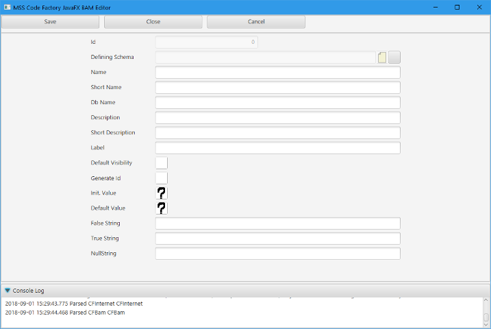
Enums can only be defined as schema data types, not as table columns. You reference an EnumType using a TableCol in the Table's column list instead. The inclusion of an "EnumCode" attribute in the tags is primarily for future support of languages such as C++, but is not relevant to Java code produced at this time.
Enum values are stored as integer data in the databases, using the ordinal of the Java enum to map to and from the database.
When adding an EnumType, you will want to "Save" rather than "Close" the form, so that you are taken to the edit form where you can add the tags for your enum.
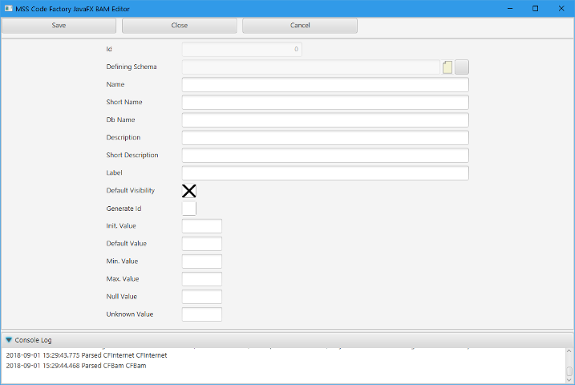
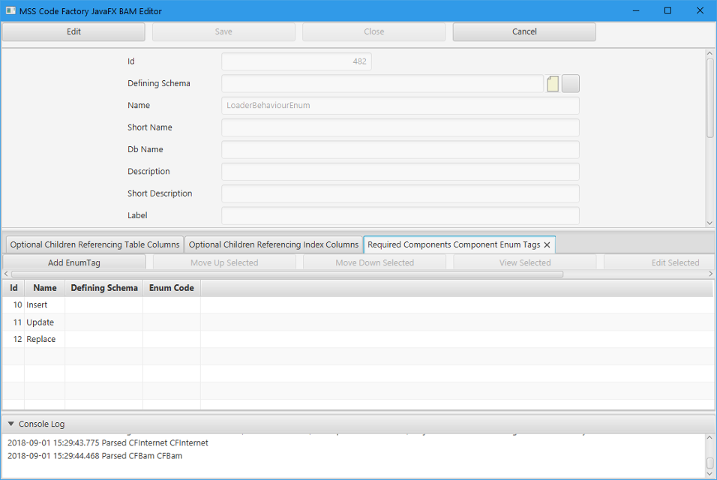
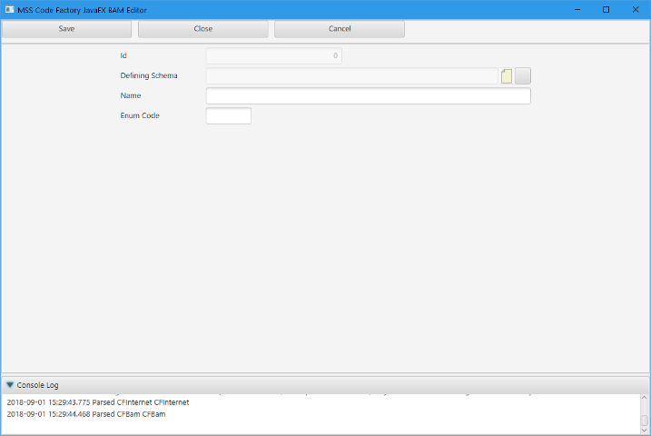
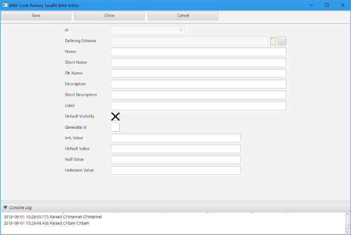
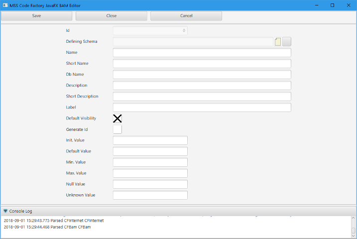
Unsigned 16-bit integers are implemented using int values in Java.

Unsigned 32-bit integers are implemented using long values in Java.

Unsigned 64-bit integers are implemented in Java as BigDecimal data.
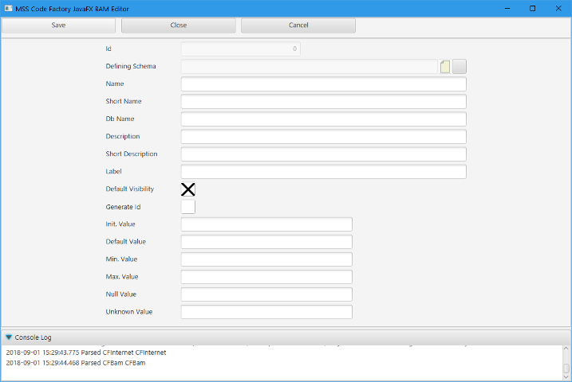
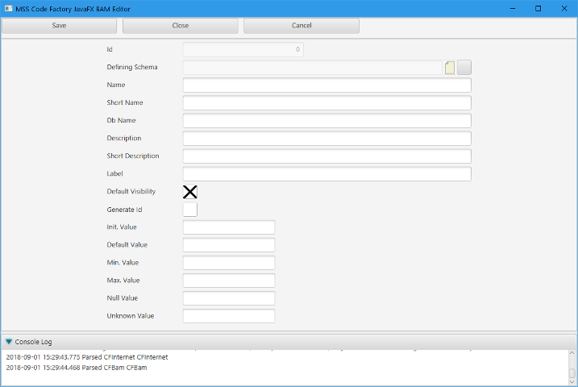
The digits and precision of numbers are enforced by the JavaFX editors as well. As much as is possible, the values are coerced in the code to ensure that the specified number of precision digits are always available.
Note that digits must be greater than precision, as digits includes the precision in its total.

The MaxLen attribute specifies the maximum length of a string or text data type. ShowLines is used to configure how high the editor is in the JavaFX form and in no way restricts the number of lines of actual text in the editor.
String and text fields are special in that the InitValue is interpreted as an empty string if the value is not nullable. If it is nullable, an empty field in the editor is interpreted as a null instead.
All of the other fields of the editors interpret an empty field as being null.
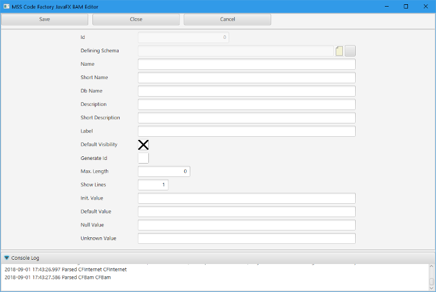
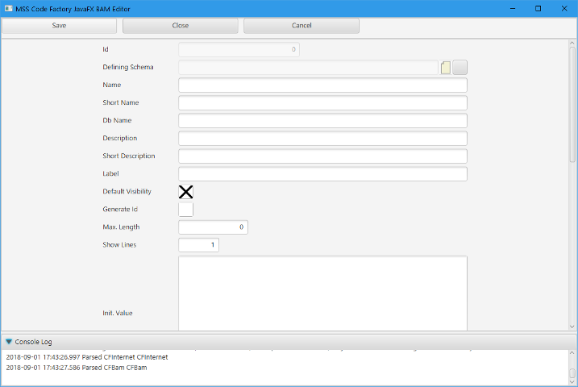
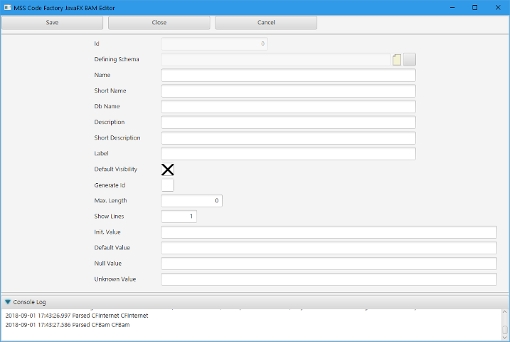
The non-timezone date-time types reference the server's timezone for their valuation, not the client's.
Yes, nicer editors should be provided. No, I am not going to write custom field editors.
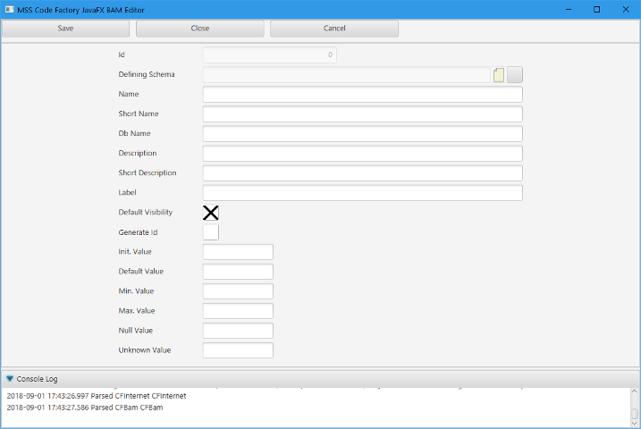
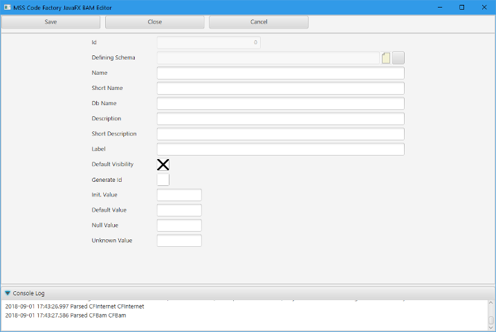
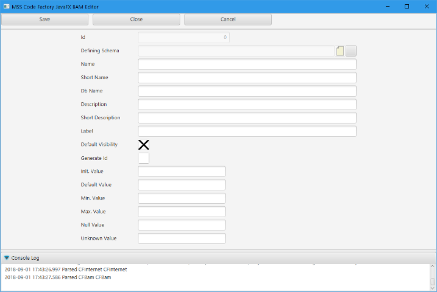
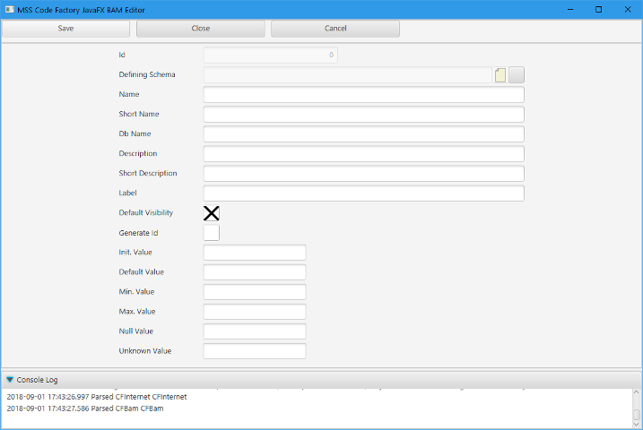
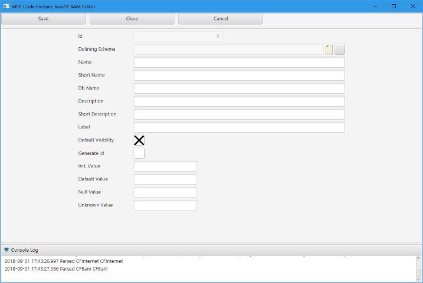
The numeric id generators can have a dispenser table specified, which is restricted to being a Cluster or Tenant table. The UUID generator has no dispenser table, as its production is entirely based on code, not the database.
The "slice" is used to slice up the id generator tables in the database and in the code, and has to be unique amongst all of the models incorporated in an application, including the one you are editing. Failure to use unique slices will likely result in database corruption. This is so important that code to check for this rule being broken is included in the model validation.
Blocksize is intended for future use, where an application server could request a block of "n" ids to be handed out by the database server at a time, for later distribution to the runtime from a cache in the application server. This hasn't been implemented yet, though, so you should just leave the block size as "1".
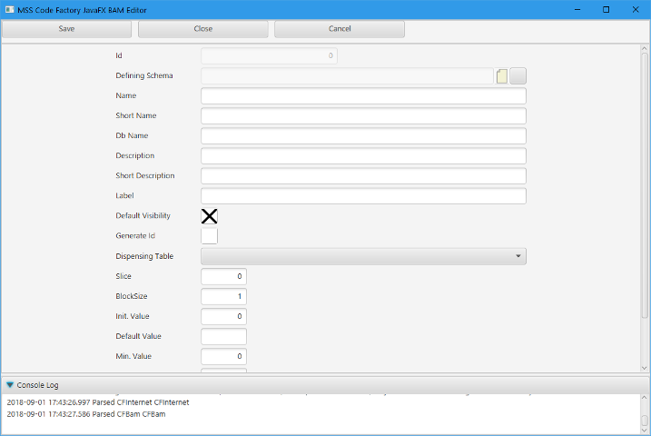
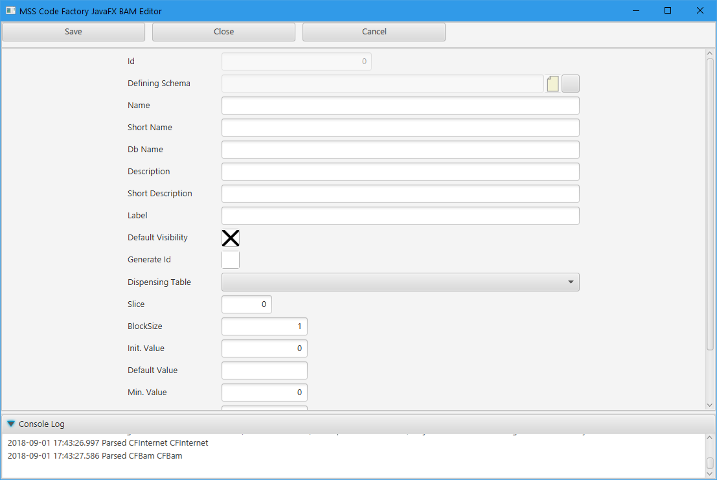
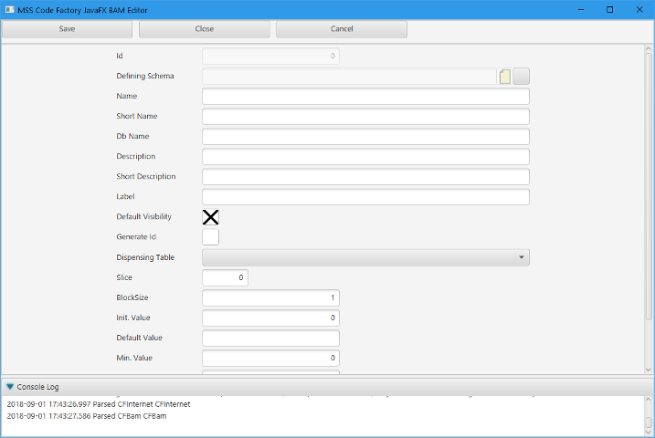
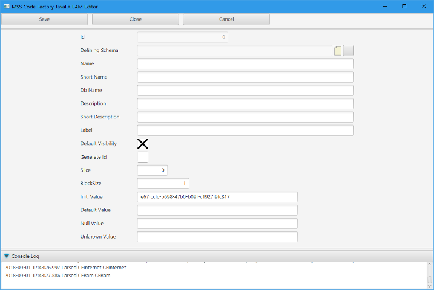